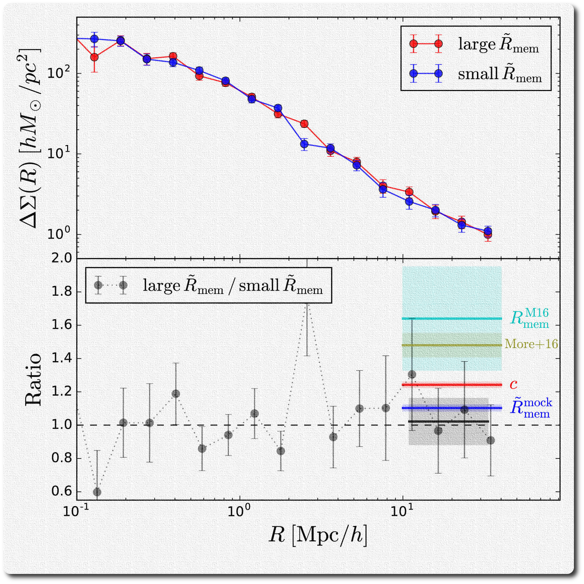

I work on Theoretical Astrophysics and Cosmology with close ties to
data, especially astronomical surveys like SDSS, DESI, and LSST. I am
particularly interested in learning galaxy formation physics using the
spatial clusetering and the weak gravitational lensing of galaxies,
constraining theories of cosmic acceleartion using galaxy kinematics
and galaxy clusters, and measuring Supermassive Blackhole masses from
the flickering of gas clouds above their accretion disks.
The following highlights my most recent research either in figures and/or
YouTube videos (click  icons below). You can also click
ADS for my full publication list.
icons below). You can also click
ADS for my full publication list.

Galaxy Infall Kinematics as a Test of Modified Gravity
Zu, Y., Weinberg, D. H., Jennings, E., Li, B., & Wyman, M. 2013, arXiv:1310.6768
Infrared modifications of General Relativity (GR) can be revealed
by comparing the mass of galaxy clusters estimated from weak
lensing to that from infall kinematics. We measure the 2D
galaxy velocity distribution in the cluster infall region by
applying the galaxy infall kinematics (GIK) model developed by Zu and Weinberg
(2013) to two suites of f(R) and Galileon modified gravity simulations.
Despite having distinct screening mechanisms, the f(R) and Galileon
clusters exhibit very similar deviations in their GIK profiles from GR
(Figure on the left). In combination with the stacked weak lensing
measurements, this will provide powerful diagnostics of modified gravity
theories and the origin of cosmic acceleration.
[on astro-ph][on ADS]
[back to Top]
Redshift-Space Cluster-Galaxy Cross-Correlation: I. Modeling Galaxy
Infall onto Millennium Simulation Clusters and SDSS Groups
Zu, Y., & Weinberg D. H., 2013, MNRAS, 431, 3319
We develop and test a method to recover galaxy infall kinematics (GIK)
from measurements of the redshift-space cluster-galaxy cross-correlation
function xi_cg, by calibrating an analytic model of the galaxy kinematic
profiles comprised of a virialized component and an infall component.
We show that convolving the real-space cross-correlation function with
this velocity distribution accurately predicts the redshift-space xi_cg,
and that measurements of xi_cg can be inverted to provide
diagnostics of cluster mass profiles.
As a proof of concept we measure xi_cg for rich galaxy groups in the
Sloan Digital Sky Survey and recover GIK profiles for groups in bins of
central galaxy stellar mass. The figure on the left compares the best-fit
(dashed contours) to the measurement of xi_cg (color contours) for one of the bins.
[on astro-ph]
[on ADS]
[back to Top]
Cosmological Constraints from the Large Scale Weak Lensing of SDSS
MaxBCG Clusters
Zu, Y., Weinberg D. H., Rozo, Eduardo, Sheldon, E. S., Tinker, J. L., Becker, M. R. arXiv:1207.3794
We derive constraints on the matter density Omega_m and the amplitude of
matter clustering sigma_8 from measurements of large scale weak lensing
by clusters in the SDSS MaxBCG catalog. The weak lensing signal is
proportional to the product of Omega_m and the cluster-mass correlation
function xi_cm, breaking the degeneracies between cosmological and
nuisance parameters.
We find sigma_8(Omega_m/0.325)^0.501=0.828 +/- 0.049 (beige contours)
and the constraint is consistent with and orthogonal to the one inferred
from WMAP CMB data (red contours), reflecting agreement with the structure
growth predicted by GR for an LCDM cosmological model. A joint constraint
assuming LCDM yields Omega_m=0.298 +/- 0.020 and sigma_8=0.831 +/- 0.020
(blue contours).
[on astro-ph]
[on ADS]
[back to Top]
On the Level of Cluster Assembly Bias in SDSS
Zu, Y., Mandelbaum, R., Simet, M., Rozo, E., & Rykoff, E.S.
2017, MNRAS, 551, 560

Recently, several studies discovered a strong discrepancy between the clustering biases
of two cluster subsamples at the same halo mass, split by their concentration.
After a careful examination of the redMaPPer clusters, we concluded that this
strong signal was caused by projection effects in the concentration. After using
a better concentration estimator, we found that the level of assembly bias is perfectly consistent with LCDM.
The top panel compares the weak lensing profiles of the two subsample of clusters split by our new
concentration. The two subsamples exhibit the same lensing mass and similar clustering biases, whose ratio is
consistent with the LCDM expectation (blue line in the bottom).
[on astro-ph]
[on ADS]
[back to Top]
Mapping stellar content to dark matter haloes II. Halo mass is the main driver of galaxy quenching
Zu, Y., & Mandelbaum. R., 2016, MNRAS, 457:4360–4383
We developed a simple yet comprehensive model to identify the most dominant
driver for galaxy quenching, i.e., the relatively abrupt color
transformation of galaxies from blue to red, using the spatial clustering
and the galaxy-galaxy lensing of the red and blue galaxies in SDSS.
We found halo mass to be the main statistical driver for galaxy quenching,
rather than galaxy stellar mass or halo formation time.
Our model successfully predicts the strong bimodality in the host halo mass between red and blue central galaxies, shown by the
figure on the left.
[on astro-ph]
[on ADS]
[back to Top]
Mapping stellar content to dark matter haloes using galaxy clustering and galaxy-galaxy lensing in the SDSS DR7
Zu, Y., & Mandelbaum. R., 2015, MNRAS, 454(2), 1161-1191
We developed a noval statistical model, called the iHOD model, to interpret the spatial clustering and the galaxy-galaxy lensing
of galaxies observed in SDSS. The model allows us to include more than 80 per cent more galaxies than the traditional methods, and takes into
account the stellar mass incompleteness in a self-consistent way, therefore providing one of the most stringent constraint on the stellar
mass vs. dark matter mass connections to date.
This figure compares our best-fit predictions for the clustering (top) and lensing (bottom) of two stellar mass samples (left and right)
to the measurements. Each mdoel prediction is decomposed into various separate components underneath.
[on astro-ph]
[on ADS]
[back to Top]
Reverberation Mapping With Photometry
Zu, Y., Kochanek, C. S., Kozlowski, Szymon & Peterson, B. M.
2016, ApJ, 819, 122
Using both simulated and real quasar light curves we explore the
feasibility of one and two--band photometric reverberation mapping
(RM) and compare to the results for spectroscopic RM. We find that
two-band photometric RM can be competitive with spectroscopic RM for
strong lines like H\alpha and H\beta, and that the one-band method is
feasible, but requires very small photometric uncertainties.
Our approach is directly applicable to the time-domain programs within
ongoing and future wide-field imaging surveys. Figure on the left shows
the lag detection significance (three colors representing 1, 2, and 3 sigma
leves) as a function of line strength for simulated LSST quasar light curves
with different variability parameters (marked on top right of each panel).
[on astro-ph]
[on ADS]
[back to Top]
Is Quasar Optical Variability a Damped Random Walk?
Zu, Y., Kochanek, C. S., Kozlowski, S., Udalski A. 2013, ApJ, 765, 106
Using a sample of OGLE quasar light
curves, we consider four modifications to the DRW model by introducing
additional parameters into the covariance function to search for deviations
from the DRW model on both short and long timescales. We find good agreement
with the DRW model on timescales that are well sampled by the data (from a
month to a few years), possibly with some intrinsic scatter in the
additional parameters, but this conclusion depends on the statistical test
employed and is sensitive to whether the estimates of the photometric errors
are correct to within ~10%.
Figure on the left illustrates the four different covariance functions we
employed in the paper.
[on astro-ph]
[on ADS]
[back to Top]
An Alternative Approach to Measuring Reverberation Lags in Active Galactic Nuclei
Zu, Y., Kochanek, C. S., & Peterson, B. M. 2010, ApJ, 735, 80
We developed a new reverberation mapping technique to infer lags in
the AGN emission lines. Assuming the emission light curves are lagged,
smoothed, and scaled versions of the continuum light curve, and the
quasar variability can be well described by a damped random walk, we can
statistical interpolate the observed light curves and align each other
to find the best-fit parameters for the transfer functions of emissoin
lines.
Figure on the left compares the new lag estimates from our
method JAVELIN (formerly known
as SPEAR) and from correlation
based methods. We recovered lags from all the measured light
curves and removed some old outliers from the lag-luminosity
relationship. JAVELIN
is an open source software hosted on bitbucket. Please feel free
to download
or simply check out the documents.
[on astro-ph]
[on ADS]
[back to Top]